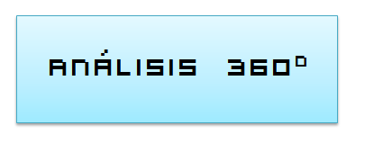
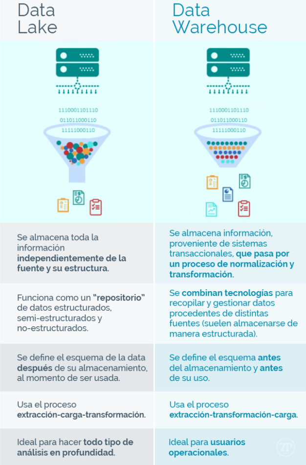

INTRODUCCIÓN¶
"Los datos son el nuevo petróleo" - Clive Humby, 2006
¿Dónde nacen los datos de hoy en día?¶

Los datos que nosotros utilizamos hoy en día se generan principalmente a través de nuestro móvil, la sensórica y los sistemas de gestión de nóminas, contabilidad, etc.


Note
Cantidad de datos que se generan por minuto en el año 2020
Definiciones¶
DATA SCIENCE - CIENCIA DE DATOS- Es una ciencia interdisciplinar basada en el análisis de datos. Su objetivo es generar valor a partir de la recopilación, clasificación, visualización e interpretación de datos.BIG DATA- hace referencia a un volumen de datos tan ámplio y complejo de datos que las técnicas tradicionales no pueden abordar siendo necesaria una aproximación específica para este tipo de problemas.-
BUSINESS INTELLIGENCE- abarca todas las tecnologías, aplicaciones y prácticas para recolectar, integrar y analizar la información mediante un análisis descriptivo par mejorar la toma de decisiones. -
BUSINESS ANALYTICS- recolecta, integra y analiza datos pero varía el enfoque. Introduce modelos predictivos para establecer tendencias, averiguar por qué suceden las cosas y hacer una estimación de cómo se desarrollarán las cosas en el futuro. -
INTELIGENCIA ARTIFICIAL- son los sistemas o máquinas que imitan la inteligencia humana para realizar tareas y pueden mejorar iterativamente a partir de la información que recopilan.

Data Warehouse y Data Lake¶
¿Dónde almacenamos toda la información que tenemos?
Data Warehouse- es el lugar donde a través de una base de datos se integran todos los datos que tengo para después poder visualizar esos datos, aplicar algoritmos, etc. Es decir, es la centralización de todos los datos en una misma base de datos. Es una base de datos estructurada.Data Lake- Es similar al data Warehouse pero la información no está estructurada. Se guarda el dato en crudo (json, imágenes, vídeos, csv,...). Es un tipo de repositorio que almacena conjuntos grandes y diversos de datos sin procesar en su formato original y que mantiene una perspectiva general de éstos.

Beneficios y usos del Big Data¶
Los beneficios del big data son:
- Mejora de la toma de decisiones.
- Mejora en la eficiencia y optimización de costes.
- Segmentación de los clientes.
- Seguridad en los datos.
- Mejora de la accesibilidad de la información dentro de la empresa.
- Ventajas competitivas.
La ciencia de datos y el Big Data se utilizan tanto en entornos comerciales como en no comerciales:
-
Las empresas comerciales lo utilizan para obtener información sobre sus clientes, procesos, personal, productos, etc.
-
Las instituciones financieras utilizan la ciencia de datos para predecir los mercados de valores, determinar el riesgo de prestar dinero y aprender a atraer nuevos clientes para sus servicios.
-
Las organizaciones gubernamentales también son conscientes del valor de los datos. Muchas organizaciones no solo dependen de los científicos de datos internos para descubrir información valiosa sino que también comparten sus datos con el público. Pueden utlizar estos datos para obtener conocimientos o crear aplicaciones basadas en datos.
-
Las organizaciones no gubernamentales (ONG) tampoco son ajenas al uso de datos. Lo utilizan para recaudar fondos y defender sus causas.
-
El Fondo Mundial para la Naturaleza (WWF), por ejemplo, emplea científicos de datos para aumentar su efectividad de sus esfuerzos de recaudación de fondos.
-
Las universidades utilizan la ciencia de datos en sus investigaciones, pero también para mejorar la experiencia de estudio de sus estudiantes.